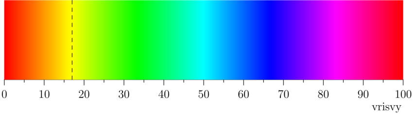
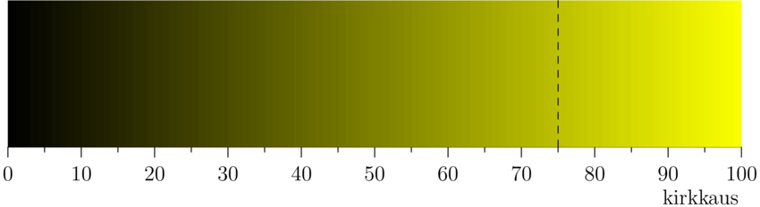
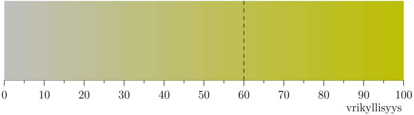

2. Kommentti ja väri
2. Kommentti ja väri
Kommentti ohjelmakoodissa
Tietokoneohjelmiin kirjoitetaan usein kommentteja, jotka ovat ohjelman ihmislukijalle tarkoitettuja selvennyksiä. Tietokone jättää kommentit huomiotta ohjelman suorituksessa.
JavaScript-ohjelmointikielessä yksi tapa kirjoittaa kommentteja on
kahden kauttaviivan // avulla. Tietokone jättää huomiotta kahta
kauttaviivaa seuraavan tekstin rivin loppuun asti. Alla on
esimerkki kommenttien käytöstä.
function setup() { createCanvas(500, 500); // asetetaan piirtoikkunan koko background("lightblue"); // asetetaan tausta vaalean siniseksi // piirretään ristin muotoinen kuvio kahden suorakulmion avulla // keskelle piirtoikkunaa rect(200, 100, 100, 300); rect(100, 200, 300, 100); }
Väreillä piirtäminen
Värikynillä paperille piirrettäessä valitaan ensin, minkä värisellä kynällä piirretään. Samaan tapaan p5.js-ohjelmoissa valitaan ennen piirtämistä, millä värillä piirretään. Samalla värillä piirretään kunnes valitaan toinen piirtoväri.
Käyttämässämme ohjelmointikielessä on yli 16 miljoonaa eri väristä
“piirtokynää”. Joitakin värejä on nimetty
("lightblue", "pink", jne.), mutta suurinta osaa ei.
Tietty väri voidaan valita muutamalla eri tavalla. Ihmisen kannalta näistä helpoiten tulkittava tapa on värin valitseminen värisävyn (englanniksi hue), värikylläisyyden (englanniksi saturation) ja värin kirkkauden (englanniksi brightness) avulla. Englanninkielisistä sanoista tulee tämän värimallin nimi HSB.
Otetaan nyt jokin väri piirtämistä varten valitsemalla värisävy, kirkkaus ja värikylläisyys.
Värisävy on jokin luku nollan ja sadan väliltä. Seuraava kuva esittää, mikä värisävy saadaan milläkin luvulla. Kaikissa tämän kuvan väreissä on suurin mahdollinen kirkkaus ja värikylläisyys.

Valitaanpa värisävyksi 17, joka antaa keltavihreän värin. Tämä on merkattu kuvaan katkoviivalla.
Valitaan seuraavaksi värin kirkkaus. Kirkkaus kertoo sen, kuinka valoisa väri on. Tässä myös kirkkaus on jokin luku nollan ja sadan väliltä. Eri kirkkauksilla saadaan seuraavat värit; kaikissa tämän kuvan väreissä on suurin mahdollinen värikylläisyys.

Valitaan värisävyn 17 lisäksi kirkkaus 75 (kuvassa katkoviivalla).
Vielä voidaan valita värikylläisyys joka kertoo sen, kuinka räikeä väri on. Alla myös värikylläisyys on jokin luku nollan ja sadan väliltä. Eri värikylläisyyksillä saadaan seuraavat värit.

Valitaan värikylläisyydeksi 60 (kuvassa katkoviivalla).
Kirkkaus valittiin yllä ennen kylläisyyttä, mutta
Processing-ohjelmointikielessä värin tiedot annetaan järjestyksessä
sävy 17, kylläisyys 60 ja kirkkaus 75. p5.js-ohjelmissa
suorakulmion täyttäminen edellä valitsemallamme värillä tapahtuu
seuraavasti. HSB-värimallin valinta tapahtuu funktiolla
colorMode(), ja suorakulmion täyttämisessä käytetyn värin
valitseminen funktiolla fill().
function setup() { createCanvas(600, 400); // valitaan HSB-värimalli, värien ominaisuuksien suurimmiksi arvoiksi // asetetaan 100 colorMode(HSB, 100); // valitaan täyttöväriksi väri, jonka sävy on 17, kylläisyys 60 ja // kirkkaus 75. fill(17, 60, 75); // piirretään suorakulmio rect (50, 50, 300, 300); }
Myös muita värejä kuin täyttöväri voidaan asettaa. Viivojen
piirtoväriä säädetään funktiolla stroke(), ja koko piirtoikkunan
taustaväriä funktiolla background(). Seuraavassa on esimerkki
näistä.
function setup() { createCanvas(600, 400); colorMode(HSB, 100); // täyttöväri räikeä ja kirkas sininen fill(67, 100, 100); // tausta samalla sävyllä, mutta vähemmän kylläisellä ja tummemmalla background(67, 50, 50); // viivat kirkkaalla punaisella stroke(0, 100, 100); rect(100, 100, 400, 200); }
Musta ja valkoinen ovat usein käytettyjä värejä. Niille voidaan
käyttää väriasetusfunktioiden lyhyempiä versioita, joilla annetaan
vain yksi luku. Tällöin mustaa vastaa luku 0 ja valkoista luku 100,
ja välillä olevat luvut antavat harmaan eri sävyjä. Kuvioiden
ääriviivat voidaan jättää pois funktion noStroke()
avulla. Viivojen piirtäminen saadaan takaisin funktion stroke()
avulla. Tässä esimerkki, jossa käytetään näitä ominaisuuksia.
function setup() { createCanvas(600, 400); colorMode(HSB, 100); background(17, 30, 50); // tausta noStroke(); // kuvioiden ääriviivat pois fill(100); // täytetään valkoisella rect(100, 100, 100, 100); // valkoinen suorakaide, ei ääriviivaa fill(0); // uudeksi täyttöväriksi musta stroke(10, 100, 100); // piirretään viivat, oransseina triangle(300, 200, 500, 350, 250, 50); // musta kolmio, oranssi ääriviiva }
Esimerkki 1
Alla on esimerkki yksinkertaisesta kuvasta. Kuvien piirtäminen ohjelmallisesti näin yksinkertaisin menetelmin vaatii paljon työtä ja on aikaavievää. Sen takia tehtävissä piirretään pääosin hyvin yksinkertaisia kuvia.
function setup() { createCanvas(600, 400); colorMode(HSB, 100); noStroke(); // ei piirretä ääriviivoja background(65, 30, 90); // sininen taivas taustana // nurmikko fill(33, 40, 50); // vihreä väri rect(0, 250, 600, 150); // talo fill(12, 50, 90); // rakennuksen väri rect(100, 150, 100, 150); // rakennus // ikkunat fill(65, 100, 50); // ikkunoiden väri rect(120, 170, 20, 20); rect(120, 210, 20, 20); rect(160, 170, 20, 20); rect(160, 210, 20, 20); // puu fill(3, 92, 24); // rungon väri rect(400, 240, 10, 10); // runko fill(33, 70, 20); // havujen väri triangle(380, 240, 430, 240, 405, 220); // alaoksat triangle(385, 230, 425, 230, 405, 210); // latva }
Miten HSB-arvoja löytää?
HSB-arvoja nimitetään myös HSV-arvoiksi. Alla olevalta sivulta saa HSV-arvoja nimetyille väreille viemällä hiiren osoittimen värin päälle.
https://en.wikipedia.org/wiki/List_of_colors_(compact)
Sivuilta saaduissa arvoissa on yksi merkittävä ero: niissä värisävyn arvo eli \(H\)-arvo on lukujen 0 ja 360 välillä. Tämän arvon voi muuttaa lukujen 0 ja 100 välille lausekkeella \[ \frac{H}{360}\cdot 100. \]
Sivulta löytyvät esimerkiksi värille “Turquoise green” arvot \((142, 25, 84).\) Tällöin lukujen 0 ja 100 välillä oleva sävyarvo on \[ \frac{142}{360}\cdot 100 \approx 39. \] Näillä arvoilla saadaan seuraavanlainen väri.
function setup() { createCanvas(100, 100); colorMode(HSB, 100); background(39, 25, 84); }
Tehtävät
- Piirrä keskelle \((600\times 400)\)-kokoista piirtoikkunaa
\((400\times 200)\)-kokoinen suorakulmio. Taustan värin
HSB-arvojen tulee olla \((9, 45, 76)\) ja suorakulmion \((54,
100, 100)\). Suorakulmiolla ei ole reunusta. Muista asettaa
colorMode(HSB, 100). - Piirrä punainen neliö siniselle pohjalle. Neliöllä tulee olla vihreä reunus. Kuvioiden koot ja tarkat värit voit valita itse.
Piirrä alla olevan kaltainen kuvio. Taustan HSB-väriarvot ovat \((96, 83, 67\)), suorakaiteen \((56, 100, 73)\) ja kolmion \((45, 51, 51).\) Suorakaiteella ei ole reunusta, kun taas kolmiolla on valkoinen reunus. Kolmion tulee olla osittain suorakaiteen päällä. Muuten voit valita kuvioiden mitat vapaasti.
Tässä tehtävässä piirtoikkunan taustavärin HSB-arvot ovat \((44, 66, 71).\) Millään piirretyllä kuviolla ei ole reunaa. Voit valita kuvioiden mitat vapaasti. a) Piirrä ikkunan sisälle kaksi suorakaidetta, joilla on sama värisävy ja värikylläisyys kuin taustalla. Toisen suorakaiteen kirkkaus on 25 yksikköä suurempi kuin taustan, toisen 25 yksikköä pienempi kuin taustan.
b) Piirrä ikkunan sisälle kaksi kolmiota, joilla on sama värisävy ja kirkkaus kuin taustalla. Toisen kolmion värikylläisyys on 30 yksikköä suurempi kuin taustan, toisen 30 yksikköä pienempi kuin taustan.
Piirrä alla oleva kuva. Piirtoikkunan koko on \((400\times 400).\) Keltaisen värin HSB-arvot ovat \((13, 62, 98).\)
Piirrä haluamasi kokoinen Ahvenanmaan lippu. Selvitä tarvittavat mitat ja värien tiedot. Voit pyöristää laskuissa saamasi tulokset kokonaisluvuiksi ohjelmaa varten.